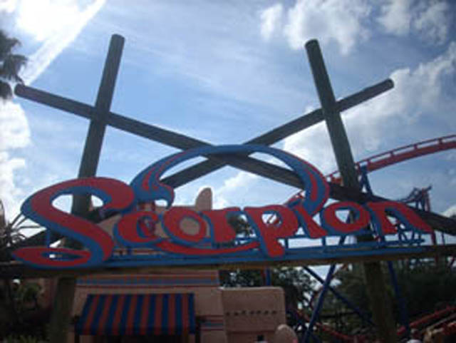

| |
Scorpion Review

We're here at Busch Gardens Tampa. Today's ride we'll be reviewing for you is Scorpion. After getting in the trains and pulling down the lap bars, we're off! We then climb up the lifthill. When we look to our right, we then see the loop and get excited as we get to go upsidedown without OTSRs today. Once we crest the top of the lifthill, we then go through a small turn before falling into the twisted drop. The drop is fun as we are leaning to the right, but we're still gaining quite a bit of speed for a ride of this size. After the drop, we roar straight up into a loop. The loop is pretty powerful and manages to bring a smile to our face. After roaring through that loop, we head straight into a banked turn before twisting up into another hill. We turn a little, but then we fall back down into another twisted drop. This time, while we're falling, we get a nice view of Shiekra, once we are done with that drop, we slam into a turn and rise up into a small hill. While on this hill, we thread the loop, which is pretty cool, but not OMFG amazing. Then we head straight into a double helix. This is pretty fun as we are gaining speed throughout the ride and getting faster as we go. Once we get out of the helix, we then head straight for the brake run. While this is a fun ride and all, it's nothing compared to the B&Ms in the park. But it's still a fun little ride that's worth a ride if there's no line.
6/10
Location: Busch Gardens Tampa
Opened: 1980
Built by: Schwarzkopf
Last Ridden: November 19, 2007
Scorpion Photos


Home
|